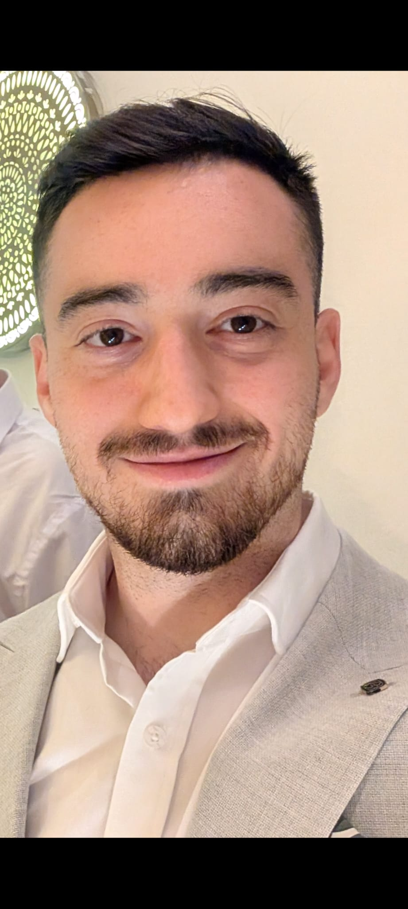

I am pursuing a B.Sc. in Computer Science at Ariel University (2023-2026), with a strong focus on systems, networking, and software engineering fundamentals. During my Texas Instruments internship, I pioneered the internal adoption of Zephyr RTOS by architecting a full automation framework from scratch for BLE profile testing. I debugged and adapted AutoPTS and Twister across diverse TI boards, then engineered host-to-device automation scripts that bridged modern test software with physical hardware. This significantly reduced manual testing overhead while increasing validation reliability.
David Kitinberg
Computer Science Student at Ariel University
I design reliable software systems at the intersection of embedded hardware and automation. My recent work centers on building scalable BLE validation workflows, modernizing test infrastructure, and reducing manual QA effort through robust end-to-end tooling.

About Me
Grades
Program Engineering
96
Operating Systems
100
Data Bases
88
Algorithms
81
Projects
Texas Instruments Internship
Built an automation testing tool for BLE profiles. Integrated autoPTS and automated the entire testing process for TI boards utilizing the Zephyr framework and Twister.
BLE
Zephyr
Twister
Embedded Automation
View Repository
EasyMove
An Android application featuring user authentication, comprehensive inventory management, and a system for finding partners.
Android
Java
Authentication
Inventory Management
View Repository
Image Processing
Foundational image processing algorithms and exercises.
Python
Image Algorithms
Computer Vision Basics
View Repository
Contact
Email:
davidkitinberg@gmail.com
Phone:
050-4293939